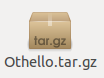
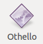

Configuration minimale
Processeur Intel celeron a 1.2Ghz
Au moins 1Go de Ram (Memoire vive)
Au moins 5 Mo d'espace disque dur disponible
Système d'exploitation Linux
Apres avoir téléchargé le jeux vous devriez avoir une archive de ce type:

Ensuite vous devez decompresser l'archivre à l'aide d'un outil de compression/decompression tel que RAR(disponible sur la logitheque linux) et vous devriez obtenir l'executable suivant:

Enfin pour lancer le jeux il suffit d'aller sur le terminal et d'utiliser cette commande: ./"le chemin d'accès de l'executable" par exemple si vous placez l'executable sur le bureau vous devriez ecrire ./Bureau/othello .